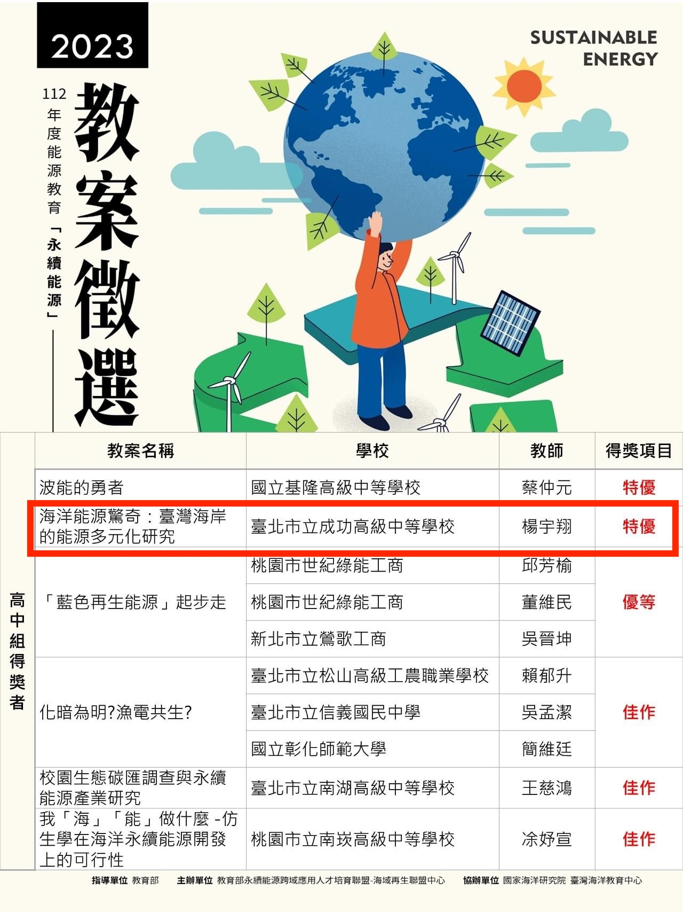
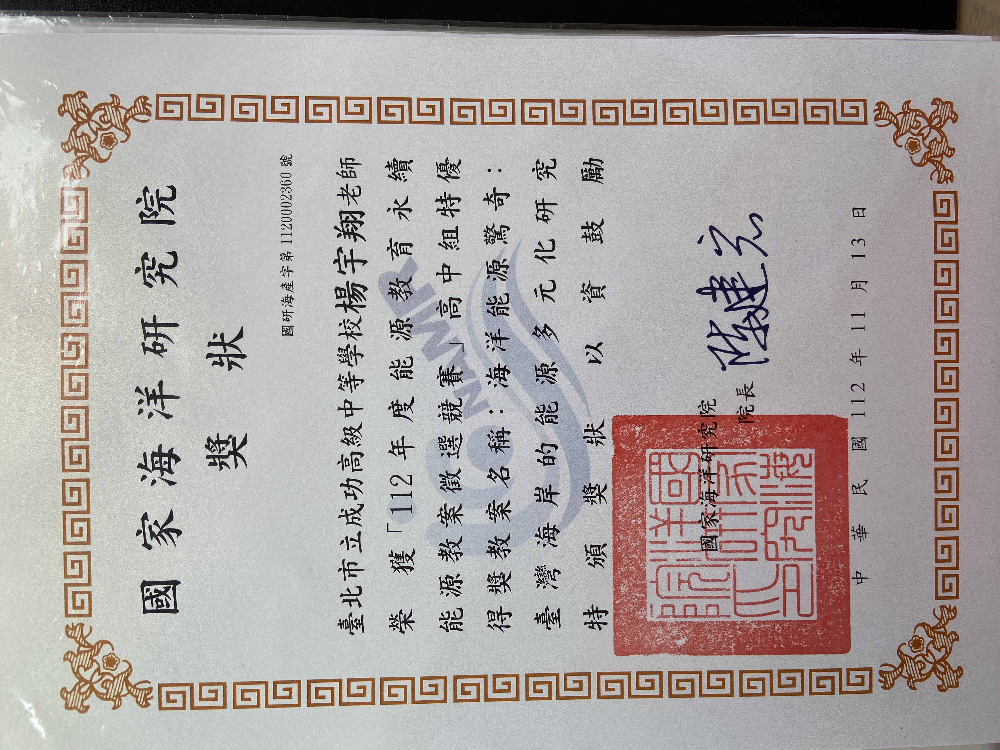

I joined Geographical Information Science Lab in the Department of Geography in National Taiwan University. My academic supervisor is Professor Tzai-Hung Wen, Ph.D.
Teaching supervisor : 王淑華 老師
本教案以「能源教育」為設計核心，從108課綱素養導向的地理 學科出發，融入海洋教育議題，期望培養學生對於臺灣作為海島 社會，發展永續能源的相關地理議題有更深層次的理解與思考。
此教案符合以下聯合國永續發展目標 SDGs 目標4. 確保有教無類、公平以及高品質的教育，及提倡終身學習。4.7 在西元 2030 年以前，確保所有的學子都習得必要的知 識與技 能而可以促進永續發展，包括永續發展教育、永續生活模式、人 權、性別平等、和平及非暴力提倡、全球公民、文化差異欣賞，以及文化對永續發展的貢獻。 SDGs 目標 14. 保育及永續利用海洋與海洋資源，以確保永續發展 14.2 在西元 2020 年以前，以可永續的方式管理及保護海洋 與海岸 生態，避免重大的不利影響，作法包括強健他們 的災後復原能力，並採取復原動作，以實現健康又具有生產力的海洋。
學生能了解臺灣不同海岸的地形與海洋環境，可能具有何種潛 在的再生能源利用的資源，對比其他國家的自然條件與技術， 臺灣的再生能源可能可以如何地永續發展，在發展的途中可能 會遇到何種困難與挑戰，以及是否會帶來負面效果，由淺入深地批判性思考臺灣的永續能源發展。
2023 Energy Education Sustainable Energy Lesson Plan Competition, Ocean Energy Surprise: Energy Diversification on Taiwan's Coast Research, YANG YU HSIANG

I joined Geographical Information Science Lab in the Department of Geography in National Taiwan University. My academic supervisor is Professor Tzai-Hung Wen, Ph.D.
Any cooperation or suggestion is welcome to me. E-mail is on school system. Phonenumer and the Address is Geography Department of National Taiwan University
Since 7,August 2019 (Wed)